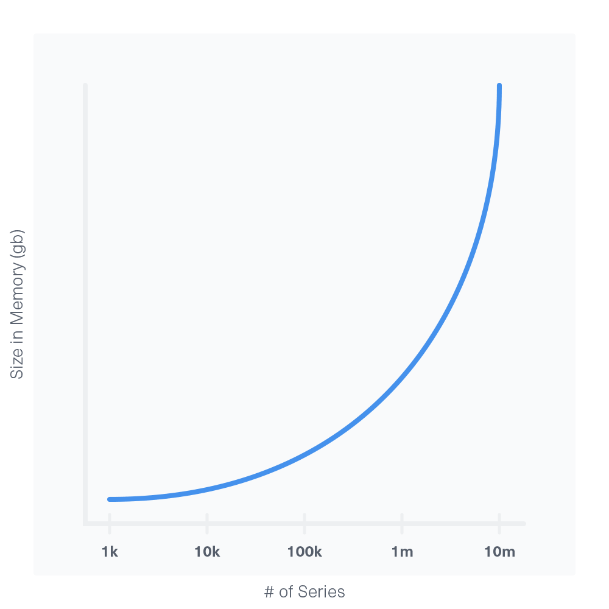

This guide offers test general hardware recommendations for InfluxDB and addresses some frequently asked questions about hardware sizing. These recommendations are only for the Time Structured Merge tree (TSM) storage engine.
Note Hardware guidelines for Time Series Index (TSI) are currently in testing.
- Single node or Cluster?
- General hardware guidelines for a single node
- General hardware guidelines for a cluster
- When do I need more RAM?
- What kind of storage do I need?
- How much storage do I need?
- How should I configure my hardware?
Single node or Cluster?
InfluxDB single node instances are fully open source. InfluxDB clustering requires our closed-source commercial product. Single node instances offer no redundancy. If the server is unavailable, writes and queries will fail immediately. Clustering offers high-availability and redundancy. Multiple copies of data are distributed across multiple servers, and the loss of any one server will not significantly impact the cluster.
If your performance requirements fall into the Moderate or Low load ranges then you can likely use a single node instance of InfluxDB. If at least one of your performance requirements falls into the Probably infeasible category, then you will likely need to use a cluster to distribute the load among multiple servers.
General hardware guidelines for a single node
We define the load that you’ll be placing on InfluxDB by the number of fields written per second, the number of queries per second, and the number of unique series. Based on your load, we make general CPU, RAM, and IOPS recommendations.
InfluxDB should be run on locally attached SSDs. Any other storage configuration will have lower performance characteristics and may not be able to recover from even small interruptions in normal processing.
| Load | Field writes per second | Moderate queries per second | Unique series |
|---|---|---|---|
| Low | < 5 thousand | < 5 | < 100 thousand |
| Moderate | < 250 thousand | < 25 | < 1 million |
| High | > 250 thousand | > 25 | > 1 million |
| Probably infeasible | > 750 thousand | > 100 | > 10 million |
Note: Queries vary widely in their impact on the system.
Simple queries:
- Have few if any functions and no regular expressions
- Are bounded in time to a few minutes, hours, or maybe a day
- Typically execute in a few milliseconds to a few dozen milliseconds
Moderate queries:
- Have multiple functions and one or two regular expressions
- May also have complex
GROUP BYclauses or sample a time range of multiple weeks- Typically execute in a few hundred or a few thousand milliseconds
Complex queries:
- Have multiple aggregation or transformation functions or multiple regular expressions
- May sample a very large time range of months or years
- Typically take multiple seconds to execute
Low load recommendations
- CPU: 2-4 cores
- RAM: 2-4 GB
- IOPS: 500
Moderate load recommendations
- CPU: 4-6 cores
- RAM: 8-32 GB
- IOPS: 500-1000
High load recommendations
- CPU: 8+ cores
- RAM: 32+ GB
- IOPS: 1000+
Probably infeasible load
Performance at this scale is a significant challenge and may not be achievable. Please contact us at sales@influxdb.com for assistance with tuning your systems.
General hardware guidelines for a cluster
Meta Nodes
A cluster must have at least three independent meta nodes to survive the loss of a server. A cluster with 2n + 1 meta nodes can tolerate the loss of n meta nodes. Clusters should have an odd number of meta nodes. There is no reason to have an even number of meta nodes, and it can lead to issues in certain configurations.
Meta nodes do not need very much computing power. Regardless of the cluster load, we recommend the following for the meta nodes:
Universal recommendation
- CPU: 1-2 cores
- RAM: 512 MB - 1 GB
- IOPS: 50
Data Nodes
A cluster with only one data node is valid but has no data redundancy. The redundancy is set by the replication factor on the retention policy to which the data is written. A cluster can lose n - 1 data nodes and still return complete query results, where n is the replication factor. For optimal data distribution within the cluster, InfluxData recommends using an even number of data nodes.
The hardware recommendations for cluster data nodes are similar to the standalone instance recommendations. Data nodes should always have at least 2 CPU cores, as they must handle regular read and write traffic, as well as intra-cluster read and write traffic. Due to the cluster communication overhead, data nodes in a cluster handle less throughput than a standalone instance on the same hardware.
| Load | Field writes per second per node | Moderate queries per second per node | Unique series per node |
|---|---|---|---|
| Low | < 5 thousand | < 5 | < 100 thousand |
| Moderate | < 100 thousand | < 25 | < 1 million |
| High | > 100 thousand | > 25 | > 1 million |
| Probably infeasible | > 500 thousand | > 100 | > 10 million |
Note: Queries vary widely in their impact on the system.
Simple queries:
- Have few if any functions and no regular expressions
- Are bounded in time to a few minutes, hours, or maybe a day
- Typically execute in a few milliseconds to a few dozen milliseconds
Moderate queries:
- Have multiple functions and one or two regular expressions
- May also have complex
GROUP BYclauses or sample a time range of multiple weeks- Typically execute in a few hundred or a few thousand milliseconds
Complex queries:
- Have multiple aggregation or transformation functions or multiple regular expressions
- May sample a very large time range of months or years
- Typically take multiple seconds to execute
Low load recommendations
- CPU: 2 cores
- RAM: 2-4 GB
- IOPS: 1000
Moderate load recommendations
- CPU: 4-6
- RAM: 8-32GB
- IOPS: 1000+
High load recommendations
- CPU: 8+
- RAM: 32+ GB
- IOPS: 1000+
Enterprise Web Node
The Enterprise Web server is primarily an HTTP server with similar load requirements. For most applications it does not need to be very robust. The cluster will function with only one Web server, but for redundancy multiple Web servers can be connected to a single back-end Postgres database.
Note: Production clusters should not use the SQLite database as it does not allow for redundant Web servers, nor can it handle high loads as gracefully as Postgres.
Universal recommendation
- CPU: 1-4 cores
- RAM: 1-2 GB
- IOPS: 50
When do I need more RAM?
In general, having more RAM helps queries return faster. There is no known downside to adding more RAM.
The major component that affects your RAM needs is series cardinality. A series cardinality around or above 10 million can cause OOM failures even with large amounts of RAM. If this is the case, you can usually address the problem by redesigning your schema.
The increase in RAM needs relative to series cardinality is exponential where the exponent is between one and two:

What kind of storage do I need?
InfluxDB is designed to run on SSDs. InfluxData does not test on HDDs or networked storage devices, and we do not recommend them for production. Performance is an order of magnitude lower on spinning disk drives and the system may break down under even moderate load. For best results InfluxDB servers must have at least 1000 IOPS on the storage system.
Please note that cluster data nodes have very high IOPS requirements when the cluster is recovering from downtime. It is recommended that the storage system have at least 2000 IOPS to allow for rapid recovery. Below 1000 IOPS, the cluster may not be able to recover from even a brief outage.
How much storage do I need?
Database names, measurements, tag keys, field keys, and tag values are stored only once and always as strings. Only field values and timestamps are stored per-point.
Non-string values require approximately three bytes. String values require variable space as determined by string compression.
How should I configure my hardware?
When running InfluxDB in a production environment the wal directory and the data directory should be on separate storage devices. This optimization significantly reduces disk contention when the system is under heavy write load. This is an important consideration if the write load is highly variable. If the write load does not vary by more than 15% the optimization is probably unneeded.